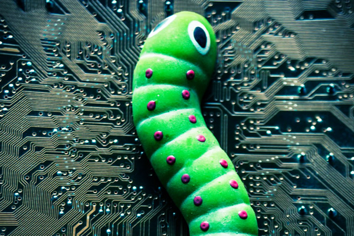

GUSANO
Los gusanos son en realidad una subclase de virus, por lo que comparten características. Son programas que realizan copias de sí mismos, alojándolas en diferentes ubicaciones del ordenador. El objetivo de este malware suele ser colapsar los ordenadores y las redes informáticas, impidiendo así el trabajo a los usuarios. A diferencia de los virus, los gusanos no infectan archivos.
